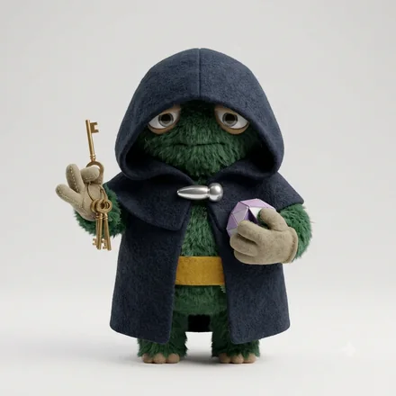
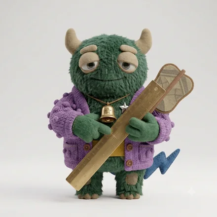

monster type
ESTJ-A-C
筋を通す仕切りモンスター
現場を整え、確実に回していく人
あなたという人
やるべきことを決め、人を配置し、期日までに終わらせます。責任の所在をはっきりさせることを重視し、曖昧な合意を嫌います。頼れる反面、正論が強く出やすいタイプです。
決めたことを、感情を挟まずに通していくタイプ。判断が速く、人を簡単には信用しないので、緩んだ現場を立て直す力があります。基準はぶれませんが、背景を語らないまま指示だけが下りるので、納得より先に反発が生まれることがあります。
4つのサブタイプの中での位置
 ESTJ-A-H面倒見のいい仕切りモンスターESTJ-A-C筋を通す仕切りモンスター
ESTJ-A-H面倒見のいい仕切りモンスターESTJ-A-C筋を通す仕切りモンスター
ESTJ-O-H根回しする仕切りモンスター ESTJ-O-C慎重な仕切りモンスター
ESTJ-O-C慎重な仕切りモンスター同じ基本タイプでも、自分への確信（A / O）と人への構え（H / C）で現れ方が変わります。
強みと、気をつけたいところ
ここは基本タイプ（ESTJ）に共通する性質です。
強み
- 混乱した現場を、すぐに手順へ落とし込める
- 決断と指示が明快で、迷いを生まない
- 責任を引き受け、最後まで面倒を見る
気をつけたいところ
- 自分のやり方を標準として押し出しやすい
- 感情面のケアが後回しになる
- 前例のない領域では慎重になりすぎる
ESTJ-A-C ならでは
このタイプの強み
馴れ合いや前例に流されず、決めた通りを実行させられる。統制が必要な局面でいちばん強くなります。
落とし穴
正しいのに従われない、が起きる。決定の背景を一度だけ説明すると、同じ指示が命令から合意に変わります。
仕事での適性
力を発揮する環境
役割と評価が明確で、実行の権限がある環境
向いている役割
現場マネジメント、業務設計、進行管理
再建・統制に強い。決定の背景を説明すると納得が生まれる。
相性
かみ合う相手

見ている世界が補い合う組み合わせ。人への構えが同じなので距離の取り方で揉めにくく、自分への確信が違うぶん、迷いのなさと慎重さを互いに預けられます。
安心できる相手

テンポも間合いも近く、説明のいらない関係になりやすい相手。長く一緒にいても疲れにくい組み合わせです。


相手のコードがわかれば、2人の相性をこの場で見られます。
この人との相性を調べるこの診断は、回答時点での自己認識を6つの軸で整理したものです。人の性格は状況や時期によって変わります。
© 2026 WONDER BROTHERS INC. All rights reserved.